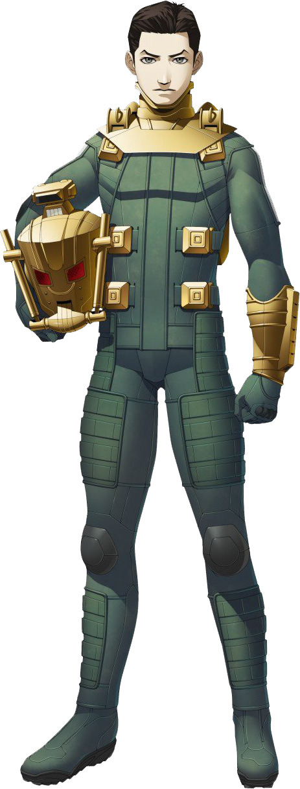
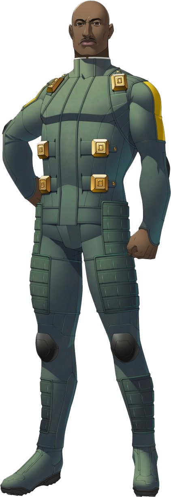
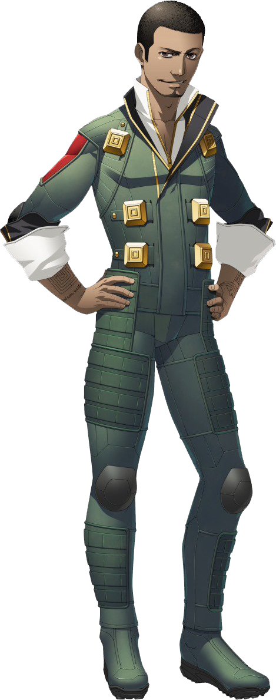
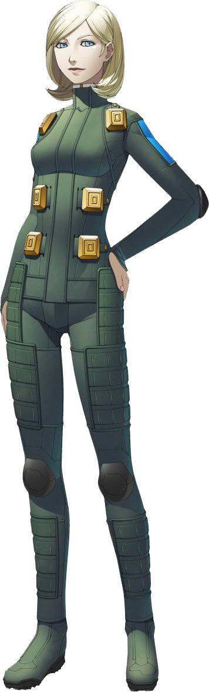
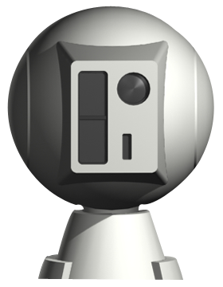
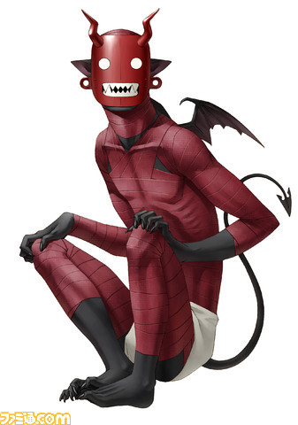
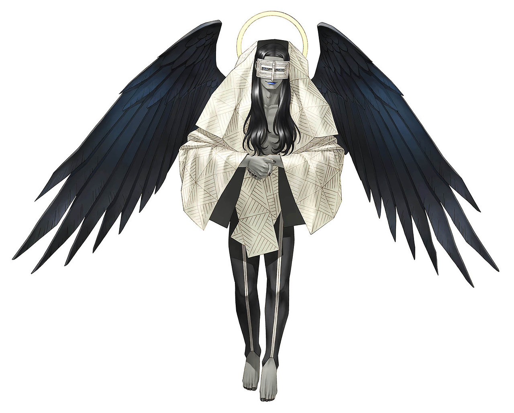

| Shin Megami Tensei: Strange Journey | |
|---|---|

|
|
| Nome original: | 真・女神転生 ストレンジジャーニー |
| Ano de lançamento: | 2009 no Japão e 2010 no Ocidente |
| Plataforma(s): | Nintendo DS e Nintendo 3DS |
Shin Megami Tensei: Strange Journey
Shin Megami Tensei: Strange Journey é um jogo para o console Nintendo DS.
Uma versão aprimorada para o Nintendo 3DS, Shin Megami Tensei: Strange Journey Redux, foi lançada em 15 de maio de 2018. O jogo inclui uma nova arte para os personagens, dublagem, animação, novos demônios e 3 novos finais.
| Contents |
|---|
1. Plot
Um misterioso buraco negro apareceu na região do Pólo Sul e está se expandindo a cada dia. Preocupada com este evento, a ONU enviou uma grupo de elite composto de soldados de todo o mundo para investigar a área chamada Schwarzwelt. Lá dentro, a equipe de investigação Schwarzwelt descobre que a área foi infestada por seres sobrenaturais conhecidos como demônios que ameaçam entrar no mundo humano. Conforme a equipe se aprofunda no Schwarzwelt, eles se deparam com atitudes humanas estranhas e repulsivas.
O jogador assume o controle de um soldado não identificado dos Estados Unidos (do Japão na versão japonesa), que estará trabalhando com três outros membros da tripulação designados pelo Projeto Conjunto. A tripulação veste trajes Demonica, o que permite acesso a habilidades especiais e também os regula às condições do Schwarzwelt.
2. Personagens






